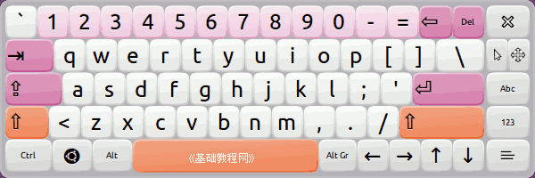
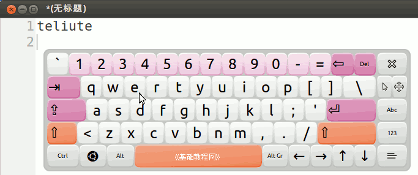
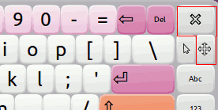
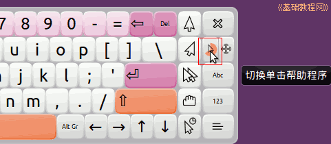
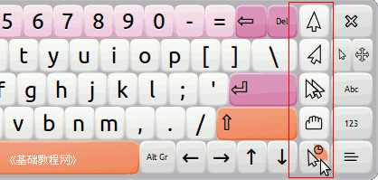
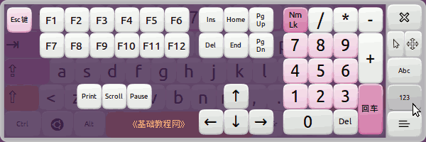
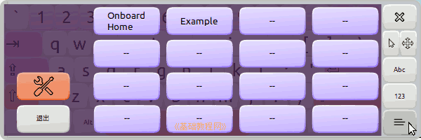
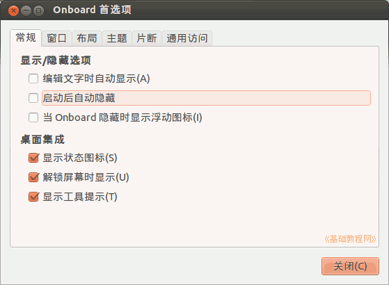

Ubuntu 入门操作指南
作者：TeliuTe 来源：基础教程网
五十三、Onboard 屏幕键盘 返回目录 下一课屏幕键盘可以用鼠标来进行键盘输入；
1、Onboard 屏幕键盘
1）点击主按钮，在搜索中输入 onboard ，打开程序，或者依次点“主按钮、所有程序、过滤结果、辅助功能、Onboard”；

2）打开文本编辑器，用鼠标点击屏幕键盘，就可以输入相应的字符；

3）点右上角的“关闭”按钮，可以退出屏幕键盘，点下边的“十字”光标按钮可以移动屏幕键盘；

4）右上角关闭按钮下边的箭头光标按钮，是开启和关闭悬停点击的，不用点击，只要把鼠标移上去就可以了；

5）例如要想在悬停的时候产生单击动作，先把指针悬在右上角指针图标上开启，然后再移到最下边的有个表的指针图标上悬停，然后就在其他位置上悬停，稍等产生单击；

6）右边的“Abc”和“123”按钮，可以在标准键盘和数字键盘之间切换；

7）右下角的“片断”按钮，点击可以储存自己常用的词句，方便快速重复输入；

8）左边的“首选项”按钮可以进行设置；

本节学习了 Onboard 屏幕键盘的基础知识，如果你成功地完成了练习，请继续学习下一课内容；
本教程由86团学校TeliuTe制作|著作权所有
基础教程网：http://teliute.org/
美丽的校园……
转载和引用本站内容，请保留版权信息和本站链接。